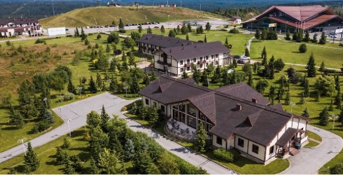

Поможем перейти на отечественное ПО без потерь. Оставьте заявку и мы свяжемся с вами!
Что мы предлагаем?
01Подбор и настройка
Подбор и настройка инструментов Битрикс24, соответствующих по функционалу вашей текущей системе. Глубокая кастомизация или разработка новых инструментов, при необходимости.
02Перенос данных
Бережно перенесём дынные, настроим этапы воронок продаж, бизнес-процессы, аналитику, подключим сторонние сервисы и системы.
03Обучение
Подключим источники поступления данных, обучим сотрудников, составим понятные инструкции и видеоуроки, по уже настроенному порталу Битрикс24.
Почему это важно?
Зарубежные CRM перестают работать
В связи со сложившейся геополитической ситуацией, использовать зарубежные системы становится все сложнее. В любой момент они могут перестать работать, а процессы встать.
Хранить данные за рубежом небезопасно
Клиенты, которые продолжают использовать западные CRM-системы, опасаются хранить данные за рубежом. Существует риск санкций со стороны России, который связан со статьей 152 ФЗ “О персональных данных”.
Что вы получите?
01
CRM-систему под ваши задачи
Мы постараемся осуществить бесшовный переход из одной системы в другую. Данные будут бережно перенесены, проверены на дубликаты и нормализованы для работы в новой системе.
02
Автоматизацию рутинных процессов
Благодаря использованию модуля бизнес-процессов Битрикс24. Настроим генерацию документов, с контролем серий, а также единое хранилище корпоративных документов и реестров.
03
Интеграцию с нужными сервисами
Настроим открытые линии и источники поступления данных из внешних систем, подключим те же сервисы или подберем равноценную замену.
04
Обучение и сопровождение
Обучим сотрудников и руководителей, ответим на все ваши вопросы. По Вашему запросу настроим необходимые отчеты по данным из CRM или подключим cервис внешней аналитики.
Перенос с каких CRM-систем мы осуществляем?
У нас есть опыт в переносе данных с более чем 10 зарубежных и отечественных CRM-систем.
Этапы миграции в корпоративный портал Битрикс24
Настройка новой системы, согласование необходимых изменений в принципах работы продукта.
Базовая настройка портала и демонстрация работы группе внедрения клиента, тестирование работы интеграций.
Перенос сайта с платформы Sales Force на Битрикс УС
“Агроинтегратор” - первая и единственная в России компания, специализирующаяся исключительно на финансировании сельхозпроизводителей Центрального Черноземья и Юга России.
Кейс: Импортозамещение в действии. Sales Force vs Битрикс24
Компания “Агроинтегратор” обеспечивает бесперебойность работы агропромышленного сектора России.
Светодиодная продукция “Jazz-way”
Создание и продвижение сайта

Загородный курорт “Игора”
Внедрение CRM-системы
Загородный курорт “Игора”
Внедрение CRM-системы
Светодиодная продукция “Jazz-way”
Создание и продвижение сайта
Светодиодная продукция “Jazz-way”
Создание и продвижение сайта
Загородный курорт “Игора”
Внедрение CRM-системы
Частые вопросы по миграции в Битрикс24
Сколько времени занимает миграция?
Минимальный срок, за который мы осуществляли переезд, занял 3 рабочих дня. Конечно, надо понимать, что это была типовая задача: развернуть портал, выполнить базовую настройку и «залить» данные из csv файлов. Реальные сроки зависят от количества, вида исходных данных, и уровня настройки внутри предыдущей crm.
Какие данные мы мигрируем?
При выборе тарифа в первую очередь нужно обратить внимание на потребности, которые вы планируете закрыть. Сервис предлагает несколько тарифов, нацеленных на разные масштабы и нужды предприятия.
В самом начале следует определиться с редакцией: коробочная или облачная. Коробочная редакция — это годовая лицензия, позволяющая установить портал на собственный сервер. Она имеет больше возможностей, но требует самостоятельного развертывания и настройки на своем оборудовании. Подойдет для компаний, у которых в приоритете конфиденциальность, а для работы требуются нестандартные решения. Облачная редакция не требует собственных мощностей и работает на серверах «Битрикс24», а большинство типовых настроек можно выполнить самостоятельно.
В каждой редакции присутствует по 3 тарифа, главное различие которых заключается в количестве сотрудников, дисковом пространстве и наборе доступных инструментов. Чем больше сотрудников и возможностей — тем выше цена.
Оплата за лицензию коробочной редакции осуществляется сразу за год, с возможностью последующего продления. Облачную редакцию можно оплачивать помесячно, при оплате сразу на больший срок предусмотрены скидки.
Сколько стоит миграция?
Модель распространения программного обеспечения компании «Битрикс24» не предполагает самостоятельного внедрения продуктов. Для этого используется сеть авторизованных партнеров, которые берут на себя ответственность за консультацию и обеспечение технической поддержки своих клиентов.
Для всех пользователей «Битрикс24» работают технические специалисты, связаться с которыми можно исключительно в рабочее время в режиме чата. Кроме этого, предусмотрены и другие варианты технической поддержки — с использованием инструментов портала, но и они не включают в себя консультации по телефону.
Если вам требуется проконсультироваться по вопросам, касающимся развертывания и настройки «Битрикс24», а также любым другим вопросам, связанным с внедрением CRM и техническим обеспечением бизнеса — звоните нам. Мы — золотой сертифицированный партнер «Битрикс24» и более 10 лет помогаем бизнесу, обеспечивая его необходимыми IT-решениями.
Наши телефоны:
Санкт-Петербург: +7 (812) 209-27-97
Москва: +7 (495) 109-27-97
Звонок по России: +7 800 600 85 81
Консультируем по вопросам приобретения, внедрения и эксплуатации CRM и других систем автоматизации.
Можно ли вручную перенести данные в Битрикс24 вместе с настройками, выполненные для предыдущей CRM ?
Сервис никак не ограничивает количество компаний на портале. Все приобретенные клиентом мощности он может использовать по своему усмотрению. Можно распределить их на несколько компаний или создать дополнительные отделы и выделить их в филиал — главное, чтобы хватило количества доступных по лицензии пользователей.
Для организации работы нескольких предприятий нужно создать в корне «структуры компании» подразделения и использовать их в качестве отдельных компаний. Будут доступны абсолютно все возможности: назначение руководителя, разделение прав доступа как от остальных компаний, так и внутри ее, распределение пользователей в группы и другие инструменты управления и контроля.
Как импортировать связанные элементы (контакты/компании/сделки) в Битрикс24?
Сервис никак не ограничивает количество компаний на портале. Все приобретенные клиентом мощности он может использовать по своему усмотрению. Можно распределить их на несколько компаний или создать дополнительные отделы и выделить их в филиал — главное, чтобы хватило количества доступных по лицензии пользователей.
Для организации работы нескольких предприятий нужно создать в корне «структуры компании» подразделения и использовать их в качестве отдельных компаний. Будут доступны абсолютно все возможности: назначение руководителя, разделение прав доступа как от остальных компаний, так и внутри ее, распределение пользователей в группы и другие инструменты управления и контроля.
Как перенести задачи в Битрикс24?
Сервис никак не ограничивает количество компаний на портале. Все приобретенные клиентом мощности он может использовать по своему усмотрению. Можно распределить их на несколько компаний или создать дополнительные отделы и выделить их в филиал — главное, чтобы хватило количества доступных по лицензии пользователей.
Для организации работы нескольких предприятий нужно создать в корне «структуры компании» подразделения и использовать их в качестве отдельных компаний. Будут доступны абсолютно все возможности: назначение руководителя, разделение прав доступа как от остальных компаний, так и внутри ее, распределение пользователей в группы и другие инструменты управления и контроля.
Можно ли мигрировать данные из Sugar CRM?
Сервис никак не ограничивает количество компаний на портале. Все приобретенные клиентом мощности он может использовать по своему усмотрению. Можно распределить их на несколько компаний или создать дополнительные отделы и выделить их в филиал — главное, чтобы хватило количества доступных по лицензии пользователей.
Для организации работы нескольких предприятий нужно создать в корне «структуры компании» подразделения и использовать их в качестве отдельных компаний. Будут доступны абсолютно все возможности: назначение руководителя, разделение прав доступа как от остальных компаний, так и внутри ее, распределение пользователей в группы и другие инструменты управления и контроля.
Можно ли конвертировать задачи из MS Project в Битрикс24?
Сервис никак не ограничивает количество компаний на портале. Все приобретенные клиентом мощности он может использовать по своему усмотрению. Можно распределить их на несколько компаний или создать дополнительные отделы и выделить их в филиал — главное, чтобы хватило количества доступных по лицензии пользователей.
Для организации работы нескольких предприятий нужно создать в корне «структуры компании» подразделения и использовать их в качестве отдельных компаний. Будут доступны абсолютно все возможности: назначение руководителя, разделение прав доступа как от остальных компаний, так и внутри ее, распределение пользователей в группы и другие инструменты управления и контроля.
Можно ли импортировать списки задач из Trello?
Сервис никак не ограничивает количество компаний на портале. Все приобретенные клиентом мощности он может использовать по своему усмотрению. Можно распределить их на несколько компаний или создать дополнительные отделы и выделить их в филиал — главное, чтобы хватило количества доступных по лицензии пользователей.
Для организации работы нескольких предприятий нужно создать в корне «структуры компании» подразделения и использовать их в качестве отдельных компаний. Будут доступны абсолютно все возможности: назначение руководителя, разделение прав доступа как от остальных компаний, так и внутри ее, распределение пользователей в группы и другие инструменты управления и контроля.
Какие особенности при импорте данных из Pipedrive?
Сервис никак не ограничивает количество компаний на портале. Все приобретенные клиентом мощности он может использовать по своему усмотрению. Можно распределить их на несколько компаний или создать дополнительные отделы и выделить их в филиал — главное, чтобы хватило количества доступных по лицензии пользователей.
Для организации работы нескольких предприятий нужно создать в корне «структуры компании» подразделения и использовать их в качестве отдельных компаний. Будут доступны абсолютно все возможности: назначение руководителя, разделение прав доступа как от остальных компаний, так и внутри ее, распределение пользователей в группы и другие инструменты управления и контроля.
Какие сущности можно перенести из ZOHO crm?
Сервис никак не ограничивает количество компаний на портале. Все приобретенные клиентом мощности он может использовать по своему усмотрению. Можно распределить их на несколько компаний или создать дополнительные отделы и выделить их в филиал — главное, чтобы хватило количества доступных по лицензии пользователей.
Для организации работы нескольких предприятий нужно создать в корне «структуры компании» подразделения и использовать их в качестве отдельных компаний. Будут доступны абсолютно все возможности: назначение руководителя, разделение прав доступа как от остальных компаний, так и внутри ее, распределение пользователей в группы и другие инструменты управления и контроля.
Можно ли перенести историю взаимодействия с клиентом из одной crm в другую?
Сервис никак не ограничивает количество компаний на портале. Все приобретенные клиентом мощности он может использовать по своему усмотрению. Можно распределить их на несколько компаний или создать дополнительные отделы и выделить их в филиал — главное, чтобы хватило количества доступных по лицензии пользователей.
Для организации работы нескольких предприятий нужно создать в корне «структуры компании» подразделения и использовать их в качестве отдельных компаний. Будут доступны абсолютно все возможности: назначение руководителя, разделение прав доступа как от остальных компаний, так и внутри ее, распределение пользователей в группы и другие инструменты управления и контроля.
Другие материалы по теме:
30.02.2021
Переезд с HubSpot в Битрикс24
Продолжаем наш короткий цикл статей, посвященных переносу данных и бизнес-процессов из иностранных CRM-систем на отечественную платформу Битрикс24.
Оперативно и совершенно бесплатно ответим на Ваши вопросы!
Нажимая кнопку "Заказать", я даю свое согласие на обработку моих персональных данных, в соответствии с Федеральным законом от 27.07.2006 года №152-Ф3 "О персональных данных", на условиях и для целей, определенных в Согласии на обработку персональных данных.